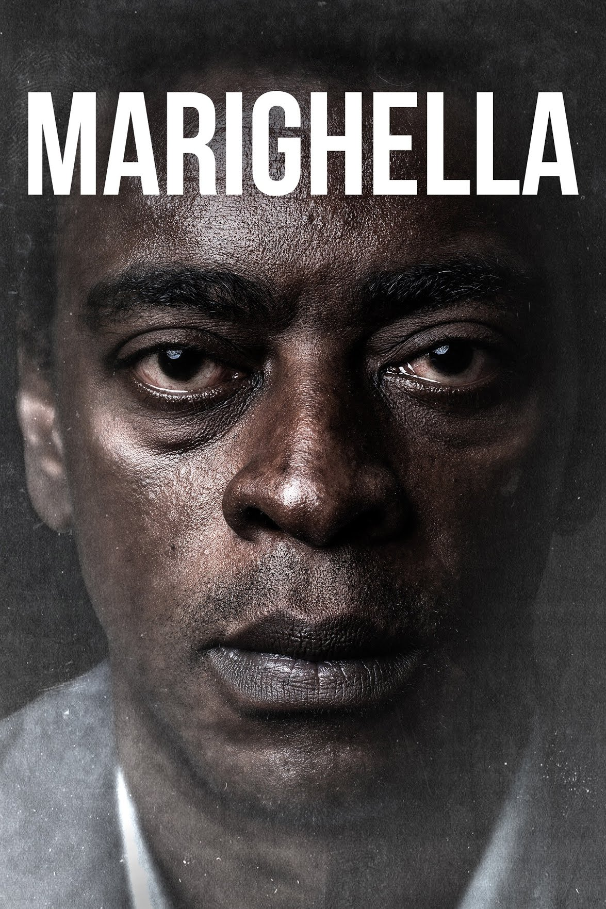

No ano de 1892, o francês Léon Bouly conseguiu, a partir do cinetoscópio, desenvolver o cinematógrafo, um modelo que conseguia gravar e projetar a luz das imagens-movimento em tela, em quadros por segundo. Contudo, Bouly não possuía dinheiro para registrar a patente do invento. O cinematógrafo acabou por ser patenteado pelos irmãos Lumière, que passaram, a partir de 1895, a fazer várias produções cinematográficas de pequena capacidade e a exibi-las em sessões especiais para isso. A primeira exibição de filme feito por Auguste e Louis Lumière ocorreu em 22 de março de 1895. O filme era intitulado “La Sortie de L'usine Lumière à Lyon” (A saída da Fábrica Lumière em Lyon) e registrava a saída dos funcionários do interior da empresa Lumière, na cidade de Lyon, na França. Foi ainda com os irmãos Lumière que começaram as primeiras “direções cênicas” para o cinema. O cinematógrafo logo passou a registrar não apenas cenas do cotidiano, mas também cenas dramáticas, elaboradas com certo nível de teatralidade, como bem atesta o sociólogo Edgar Morin na obra “O Cinema, ou O homem imaginário”.
Agora, veremos alguns filmes marcantes para a história brasileira.
Um dos maiores marcos do cinema brasileiro.O filme recebeu um Globo de Ouro e foi a primeira produção brasileira a receber o Urso de Ouro do Festival de Berlim. Além disso, foi indicado ao Oscar de melhor filme estrangeiro e foi responsável pela indicação de Fernanda Montenegro ao prêmio de melhor atriz - o Oscar não foi possível, mas a atriz recebeu um Urso de Prata por sua atuação.
Narra a trajetória de Dora, uma amargurada ex-professora, ganha a vida escrevendo cartas para pessoas analfabetas, que ditam o que querem contar às suas famílias.Ela embolsa o dinheiro sem sequer postar as cartas. Um dia, Josué, o filho de nove anos de idade de uma de suas clientes, acaba sozinho quando a mãe é morta em um acidente de ônibus. Ela reluta em cuidar do menino, mas se junta a ele em uma viagem pelo interior do Nordeste em busca do pai de Josué, que ele nunca conheceu.
A adaptação cinematográfica da peça do escritor Ariano Suassuna foi criada, inicialmente, como uma minissérie de quatro capítulos para a televisão aberta. No entanto, com o sucesso da obra, a Globo Filmes decidiu investir no primeiro longa de sua história e lançar a versão para o cinema. No Grande Prêmio do Cinema Brasil, a obra foi vencedora nas categorias de melhor diretor, melhor ator, melhor roteiro e melhor lançamento. Em 2015, foi eleito pela Abraccine (Associação Brasileira de Críticos de Cinema) um dos 100 melhores filmes brasileiros de todos os tempos. Fora do Brasil, venceu o prêmio do júri popular no Festival de Cinema Brasileiro em Miami. Também levou melhor ator para Matheus Nachtergaele (João Grilo) no Festival Internacional de Cinema de Viña del Mar, no Chile.
As aventuras de João Grilo e Chicó, dois nordestinos pobres que vivem de golpes para sobreviver. Eles estão sempre enganando o povo de um pequeno vilarejo, inclusive o temido cangaceiro Severino de Aracaju, que os persegue pela região.
Lançado em 2019, no festival de Berlim, o filme "Marighella" só chegou aos cinemas brasileiros em 2021. Além de Berlim, o filme já passou por festivais em Seattle, Hong Kong, Sydney, Santiago, Havana, Istambul, Atenas, Estocolmo, Cairo, entre cerca de 30 exibições em países dos cinco continentes.
Comandando um grupo de jovens guerrilheiros, Carlos Marighella tenta divulgar sua luta contra a ditadura para o povo brasileiro, mas a censura descredita a revolução. Seu principal opositor é Lúcio, policial que o rotula como inimigo público do país.